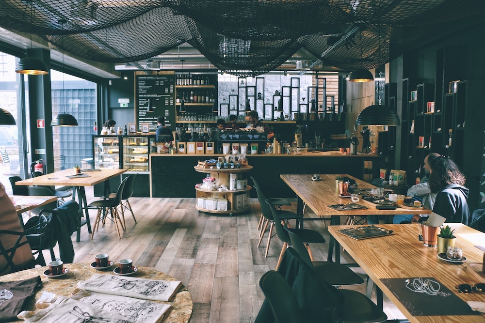

About Axton Cafe
Whether you’re dining in the lively carriageway barroom, al fresco in the wisteria ensconced patio & garden, or in our warmly intimate dining room, the Axton Cafe menu features mediterranean inspired dishes centered on our wood burning hearth and rotisserie.
Additionally, chef Travis Axton and his team offer a sumptuous nightly multi-course tasting menu with optional wine pairings culled from our award-winning list of nearly 400 bottles.